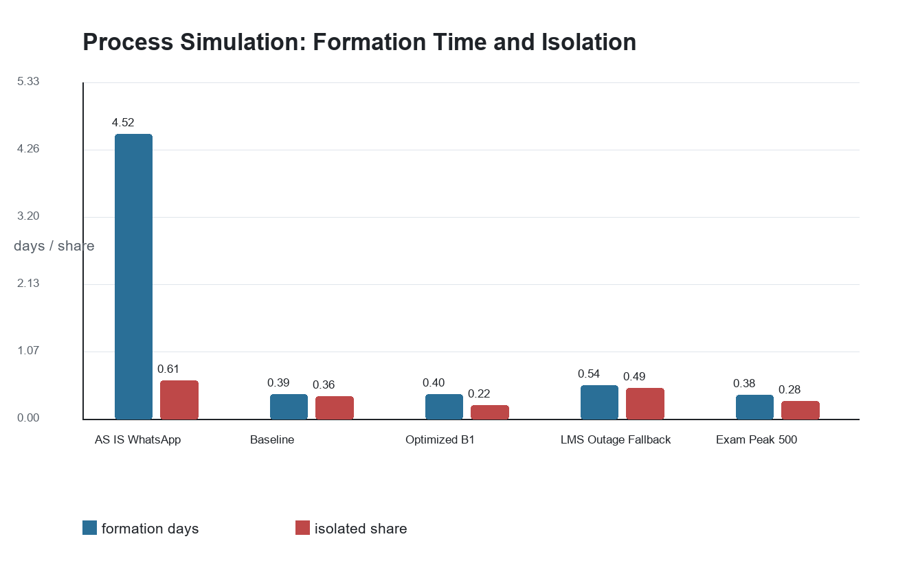
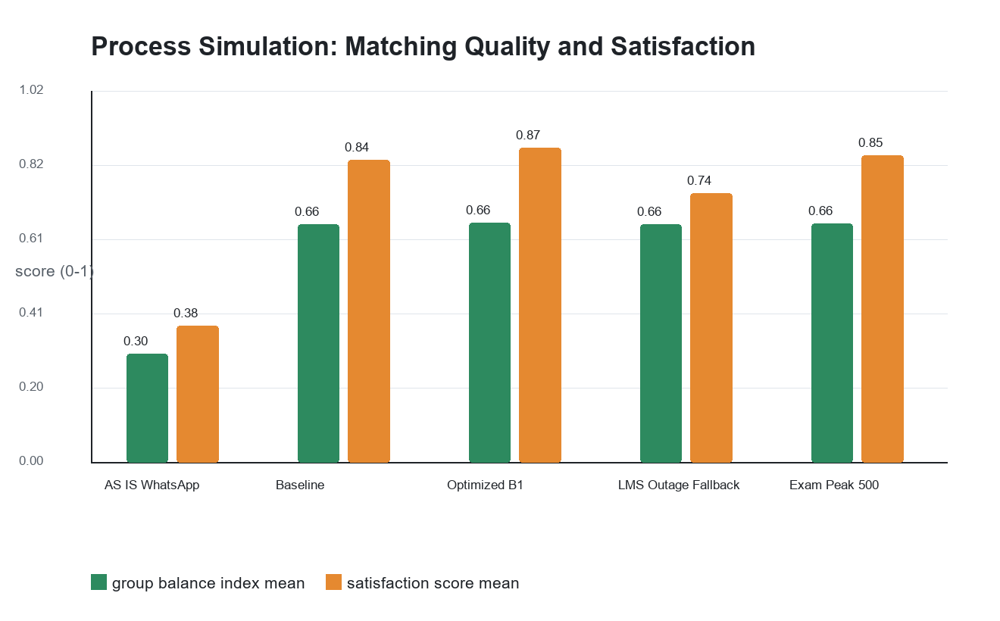
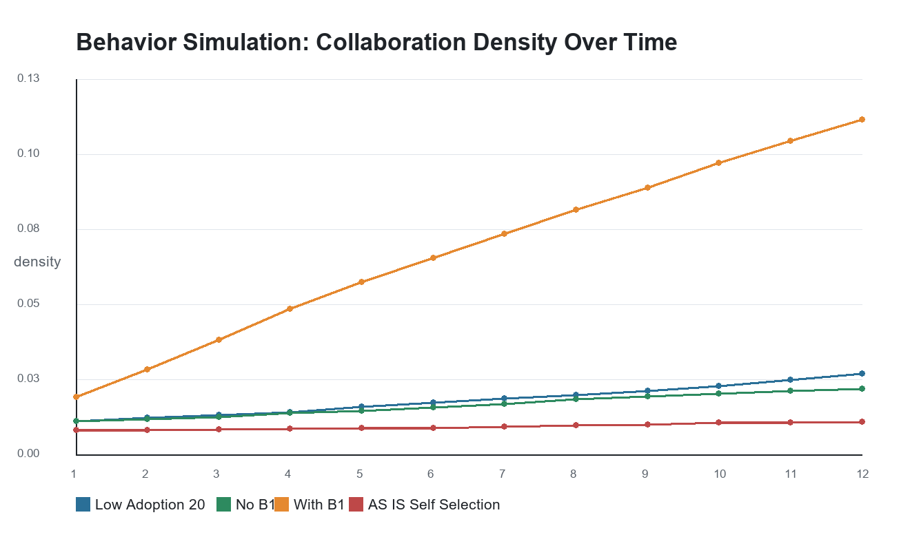
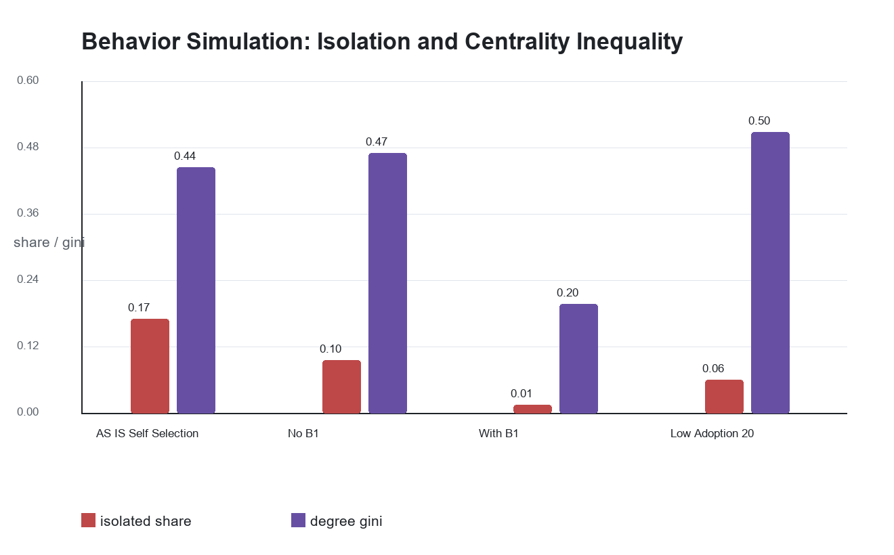
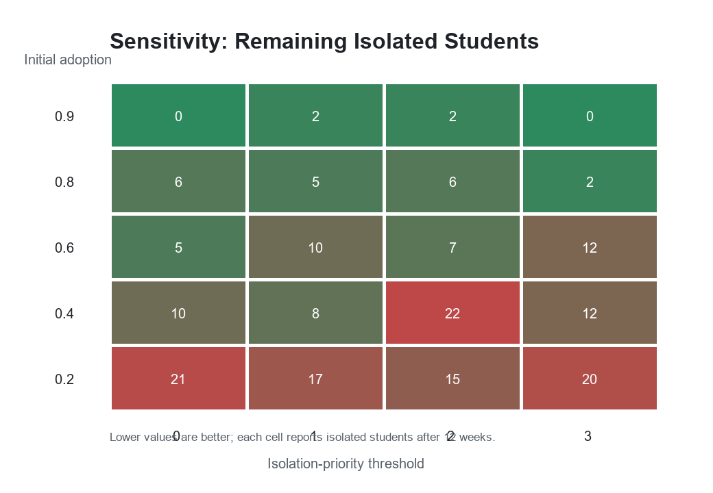

91.1%Group formation time reduction
1.25sp95 latency at 500 students
0.87Optimized satisfaction score
3Isolated students after B1 loop
Visual Results





Process Simulation Summary
| scenario | cohort_size | success_rate_mean | success_rate_std | median_formation_days | p95_matching_latency_seconds | isolated_students_mean | isolated_students_std | group_balance_index_mean | mean_schedule_score | satisfaction_score_mean |
|---|---|---|---|---|---|---|---|---|---|---|
| AS_IS_WhatsApp | 200.000 | 0.391 | 0.073 | 4.515 | N/A | 121.875 | 14.611 | 0.300 | 0.838 | 0.377 |
| ACN_Baseline | 200.000 | 0.897 | 0.057 | 0.392 | 0.272 | 72.792 | 9.954 | 0.658 | 0.706 | 0.835 |
| ACN_Optimized_B1 | 200.000 | 0.981 | 0.024 | 0.402 | 0.210 | 43.667 | 7.122 | 0.661 | 0.707 | 0.867 |
| ACN_LMS_Outage_Fallback | 200.000 | 0.718 | 0.084 | 0.535 | 0.309 | 98.583 | 12.488 | 0.658 | 0.705 | 0.742 |
| ACN_Exam_Peak_500 | 500.000 | 0.931 | 0.028 | 0.382 | 1.249 | 141.625 | 12.721 | 0.658 | 0.707 | 0.846 |
Behavior Simulation Summary
| scenario | adoption_rate | density | isolated_students | degree_gini | giant_component_share | mean_satisfaction | group_balance_index |
|---|---|---|---|---|---|---|---|
| AS_IS_Self_Selection | 0.000 | 0.011 | 34.000 | 0.442 | 0.800 | 0.468 | 0.216 |
| ACN_No_B1 | 0.430 | 0.022 | 19.000 | 0.467 | 0.880 | 0.615 | 0.729 |
| ACN_With_B1 | 0.855 | 0.112 | 3.000 | 0.196 | 0.985 | 0.772 | 0.668 |
| ACN_Low_Adoption_20 | 0.375 | 0.027 | 12.000 | 0.505 | 0.930 | 0.619 | 0.616 |
How to Regenerate
Run run_workshop4.bat from the project folder. It regenerates this dashboard, the PDF report, figures and CSV results.